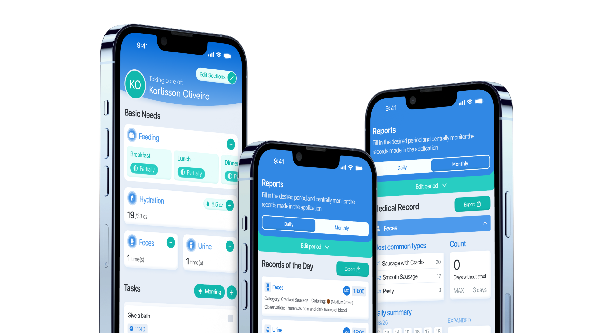
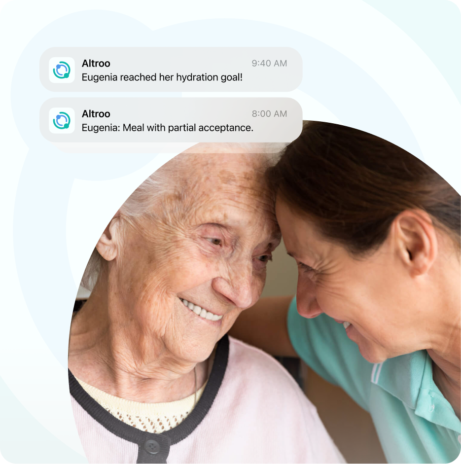
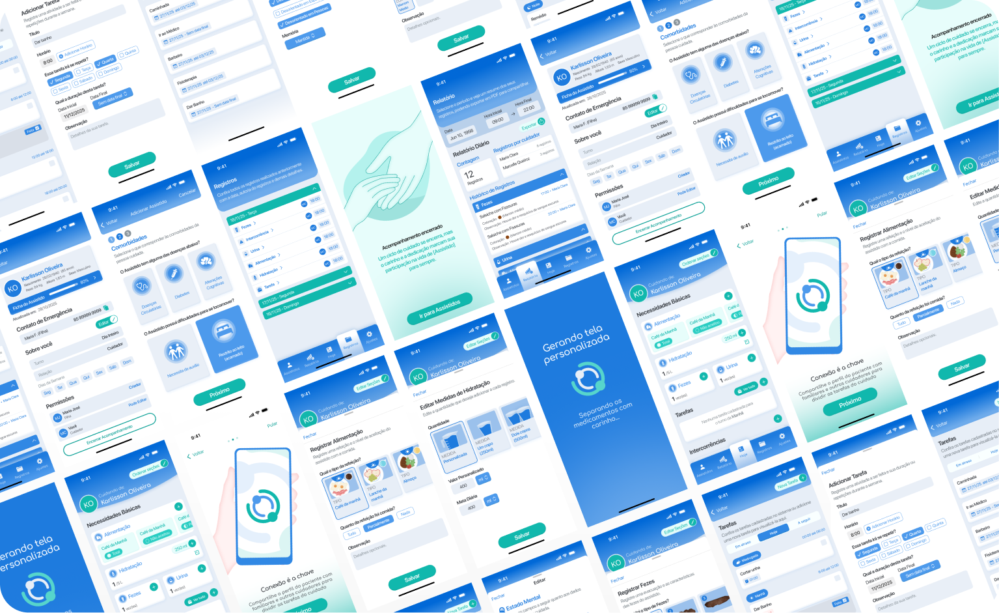
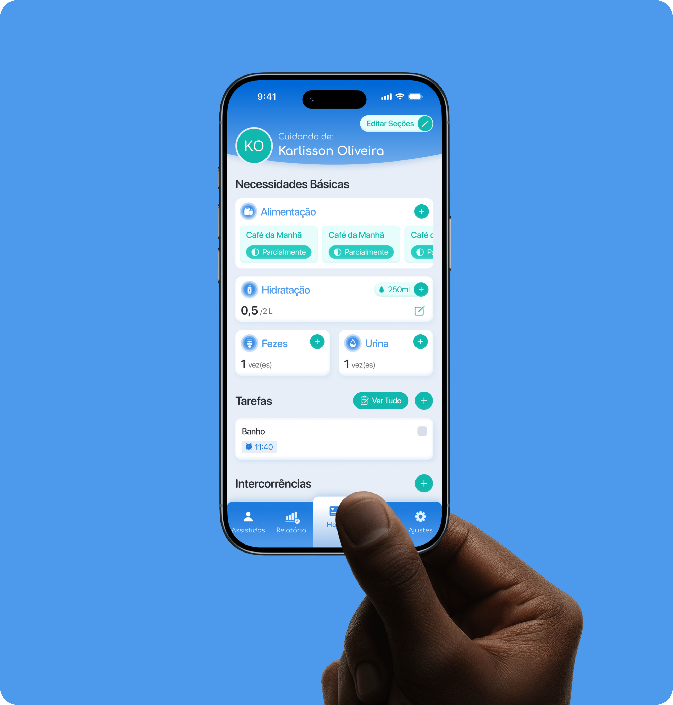
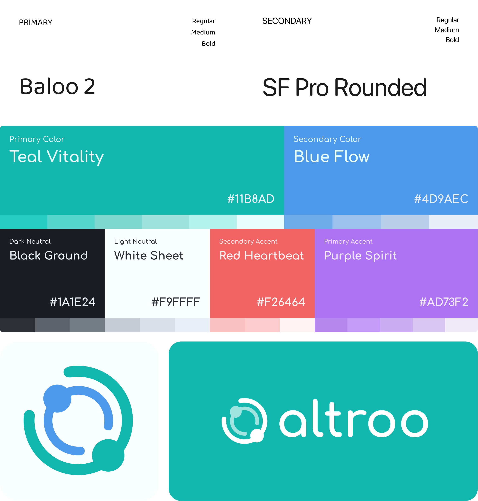
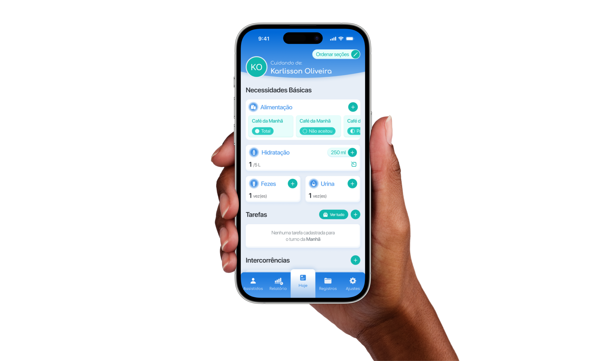
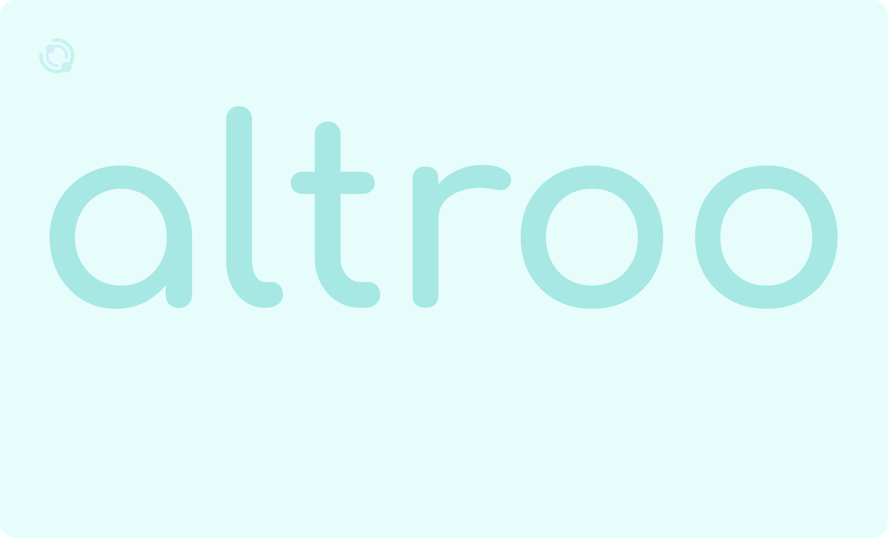
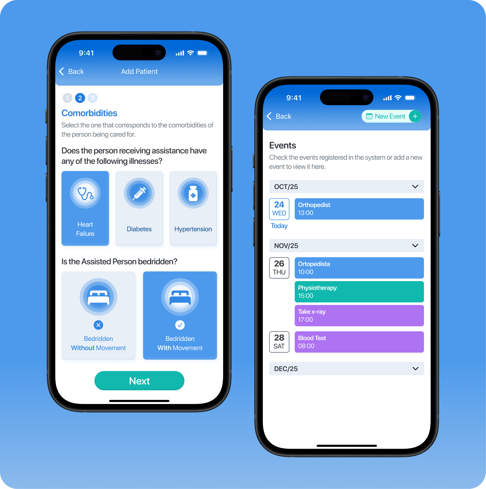
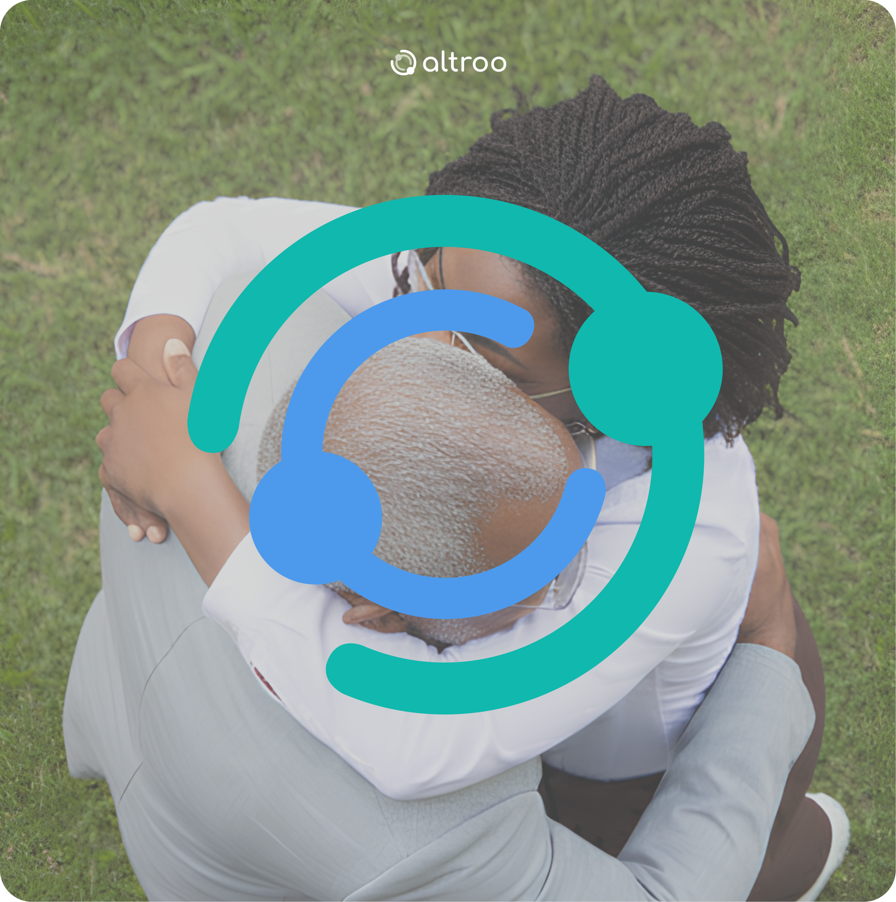

About
A mobile app designed for caregivers that centralizes care records and turns everyday information into automatic reports, making clear and continuous communication between caregivers and families easier.
Developed in Swift, it combines UIKit, SwiftUI, Combine, CoreData and CloudKit for secure synchronization, offline functionality and integrated communication.
Problem
"Caregivers struggle to keep care records up to date and centralized over time, which compromises effective communication with family members, other caregivers and the medical team."
Objective
Create an app for professional caregivers that centralizes care records in a simple and organized way, making continuous patient monitoring and day-to-day decision-making easier.
Workflow
Research
Ideation
Interfaces
Validation


Branding


App


Between medication, notes and appointments,
caregivers need organization,
they need control.
That is what altroo is here for.

